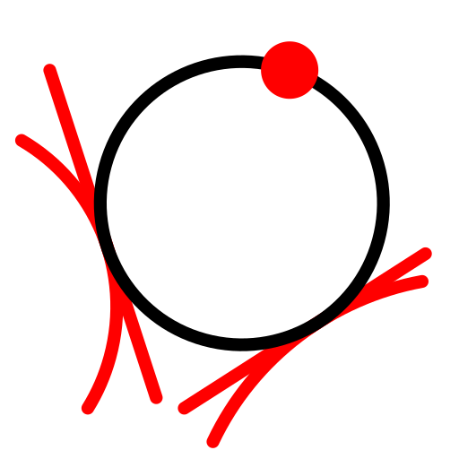
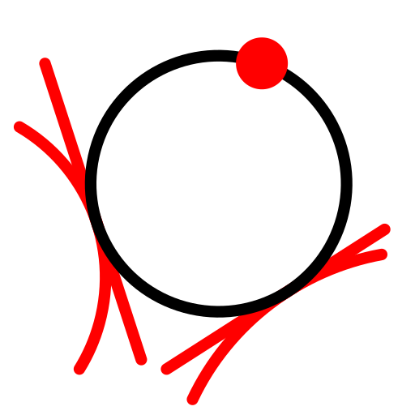
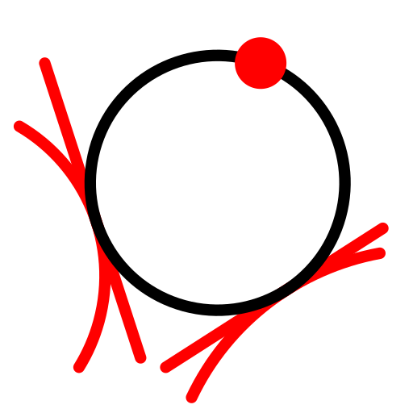
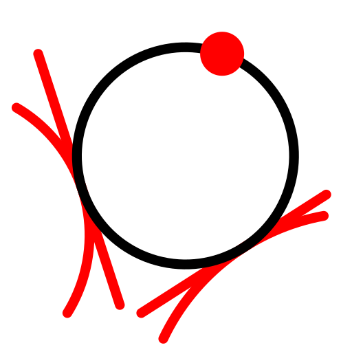
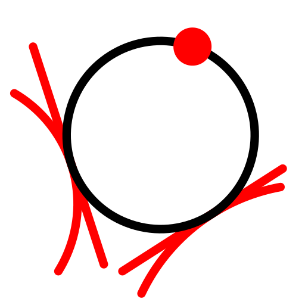

2 Tagenti ter točka
Toolbar / Icon:

Menu:
Risanje > Krog > 2 Tagenti ter točka
Shortcut:
C, T, 2
Commands:
circletangent2 | ct2
Opis:
Izriše krog, ki je tangencialen na dva objekta ter teče skozi eno točko.
 


